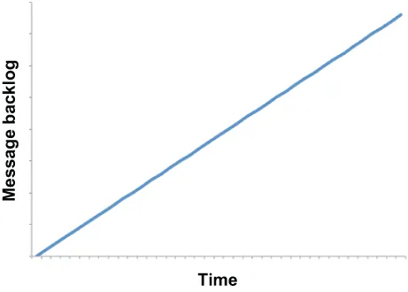

When it comes to the detection of faulty conditions within a Pulsar Functions topology, one only needs to examine the degree to which data is flowing through the entire topology. Simply put, is the application keeping up with the data volume being fed to it from the input topic, or is it falling behind? Data should flow through the DAG just like blood flowing through your body: uninterrupted and at a steady pace. There shouldn’t be any blockages that are cutting off the flow to certain areas.
要检测一个 Pulsar Functions 拓扑中的故障状况，只需要考察数据在整个拓扑中流动的通畅程度即可。简单地说：这个应用跟不跟得上从输入主题喂给它的那批数据量，还是已经落在后面了？数据应当流经整个 DAG，就像血液流经你的身体一样：不间断，且节奏平稳。不应该存在任何把流向某些区域的通路截断的阻塞。
All of the adverse events we have discussed thus far have a similar impact on the flow of data: a steady increase in unprocessed messages. Within Pulsar, the key metric that indicates such a blockage is message backlog. The presence of an ever-increasing message backlog at the Pulsar application’s input topic is an indication of degraded or faulty operation. To be clear, I am not talking about the absolute number of messages in the backlog but rather the trend of that number itself over a period of time, such as your peak business hours.
到目前为止我们所讨论的全部不利事件，对数据流都有着相似的影响：未处理消息数量的持续攀升。在 Pulsar 内部，指示这类阻塞的关键指标就是消息积压（message backlog）。在 Pulsar 应用的输入主题上，如果出现一个持续不断增大的消息积压，那就说明运行状况已经退化或出现了故障。需要说清楚的是，我讲的并不是积压中的绝对消息条数，而是这个数字本身在一段时间之内（例如你的业务高峰时段）的趋势。
When a Pulsar application or function cannot keep up with the growing data volume in its input topic, as shown in figure 9.5, this condition is known as backpressure and is indicative of a lack of processing capacity and degraded performance within the application, which must be remedied to meet the business SLAs. The term backpressure is borrowed from fluid dynamics and used to indicate some resistance or opposing force restricting the desired flow of data through the topology just like a clog in your kitchen sink creates an opposing force to the water draining. Similarly, this condition is not isolated to the Pulsar function that is consuming the messages, but also has an impact throughout the entire topology.
当一个 Pulsar 应用或函数跟不上其输入主题中不断增大的数据量时（如图 9.5 所示），这种状况就被称为背压（backpressure），它表明该应用内部缺乏处理能力、性能已经退化，必须加以补救才能满足业务 SLA。背压这个术语借自流体力学，用来表示某种阻力或反向作用力在限制数据按期望的方式流过拓扑——就像你家厨房水槽里的堵塞物会对正在排走的水产生一个反向作用力一样。同样地，这种状况并不只局限于那个正在消费消息的 Pulsar 函数，而是会对整个拓扑都产生影响。

Figure 9.5 The condition where the message backlog for a particular subscription increases steadily over time is referred to as backpressure and is indicative of degraded performance within a Pulsar function or application.
图 9.5 某个特定订阅的消息积压随时间持续增长的这种状况，被称为背压，它表明某个 Pulsar 函数或应用内部出现了性能退化。
All of the adverse events we have discussed thus far—function death, function lag, and non-progressing functions—can be detected by the presence of backpressure on the function’s input topic(s). You should monitor the following topic-level metrics to detect backpressure within a Pulsar function:
到目前为止我们所讨论的全部不利事件——函数死亡、函数滞后和函数停滞——都可以通过该函数输入主题上是否出现背压来检测。你应当监控以下这些主题级指标，以侦测某个 Pulsar 函数内部的背压：
pulsar_rate_in, which measures the rate at which messages are coming into the topic in messages per second
pulsar_rate_in，用于衡量消息进入该主题的速率，单位为每秒消息数
pulsar_rate_out, which measures the rate at which messages are being consumed from the topic in messages per second
pulsar_rate_out，用于衡量消息从该主题被消费的速率，单位为每秒消息数
pulsar_storage_backlog_size, which measures the total backlog size of the topic in bytes
pulsar_storage_backlog_size，用于衡量该主题的积压总量，单位为字节
All of these metrics are periodically published to Prometheus and can be monitored by any observability framework that integrates with that platform. Any increase in message backlog within any of the function’s input topics is indicative of one or more of these events and should trigger an alert.
所有这些指标都会被定期发布到 Prometheus，并且可以被任何与该平台集成的可观测性框架所监控。在函数的任一输入主题中出现的任何消息积压增长，都表明发生了一个或多个上述事件，并应当触发告警。